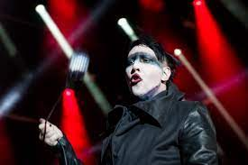

This article is about the musician. For the associated band, see Marilyn Manson (Band). "Brian Warner" redirects here. For the cricketer from New Zealand, see Brian Warner (circketer). Not to be confused with Marilyn Mason or Marlyn Mason.
Brian Hugh Warner (born January 5, 1969), known professionally as Marilyn Manson, is an American rock musician. He came to prominence as the lead singer of the a band that shares his name, of which he remains the only constant member since its formation in 1989. Known for his controversial stage personality and public image, his stage name (like the other founding members of the band) was formed by combining the names of two opposing American cultural icons: actress Marilyn Monroe and cult leader Charles Manson.
Manson is best known for music released in the 1990s, including the albums Portrait of an American Family (1994), Antichrist Superstar (1996) and Mechanical Animals (1998), which earned him a reputation in mainstream media as a controversial figure and negative influence on young people when combined with his public image.[1][2] In the U.S. alone, three of the band's albums have been awarded platinum status and three more went gold, and the band has had eight releases debut in the top 10, including two No. 1 albums. Manson has been ranked at No. 44 on the list of the "Top 100 Heavy Metal Vocalists" by Hit Paraderand, along with his band, has been nominated for four Grammy Awards–Manson himself earned an additional Grammy nomination for his work on Kanye West's Donda. Manson made his film debut as an actor in David Lynch's Lost Highway (1997), and has since appeared in a variety of minor roles and cameos. In 2002, his first art show, The Golden Age of Grotesque, was held at the Los Angeles Contemporary Exhibitions center.
He is widely considered one of the most controversial figures in heavy metal music, and has been involved in numerous controversies throughout his career. His lyrics were criticized by American politicians and were examined in congressional hearings. Several U.S. states enacted legislation specifically banning the group from performing in state-operated venues. In 1999, news media falsely blamed Manson for influencing the perpetrators of the Columbine High School massacre. His work has been cited in several other violent events; his paintings and films appeared as evidence in a murder trial, and he has been accused of inspiring several other murders and school shootings.
In 2021, multiple women, including his former partner Evan Rachel Wood, accused Manson of psychologically and sexually abusing them, allegations he denied.[3] As of March 2023, at least one lawsuit has been dismissed after the accuser who filed it claimed she made up the allegations and that she was pressured to do so by Wood.[4]
Main article: Marilyn Manson (band)